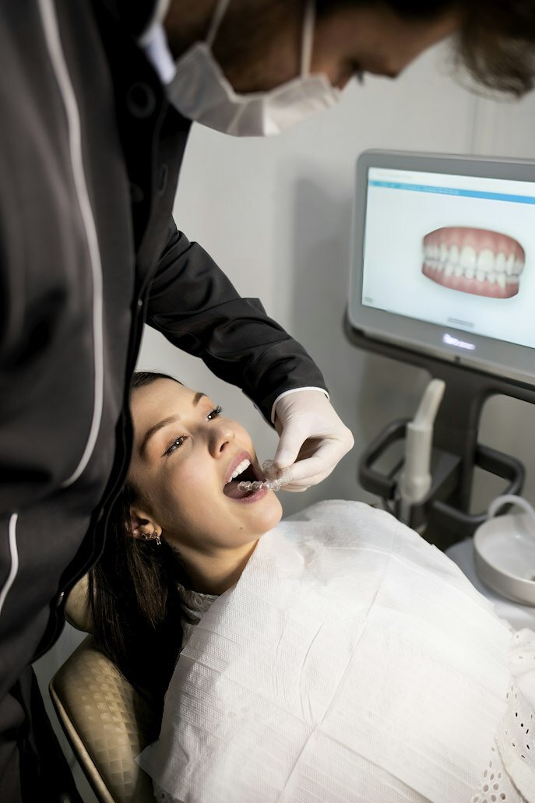
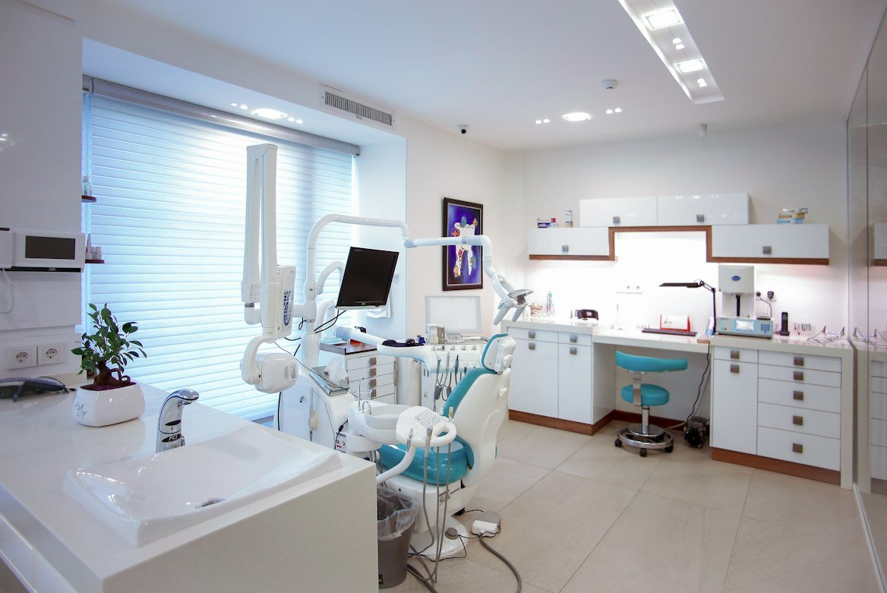
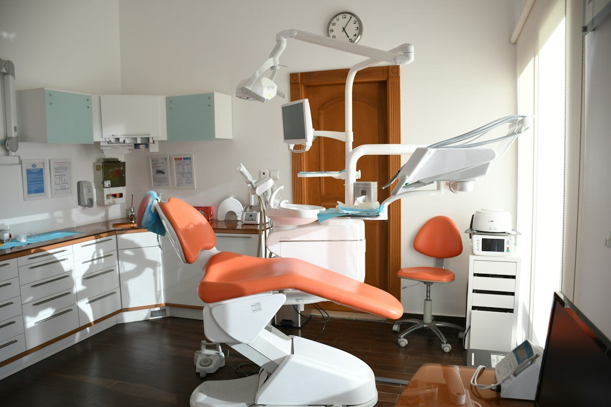
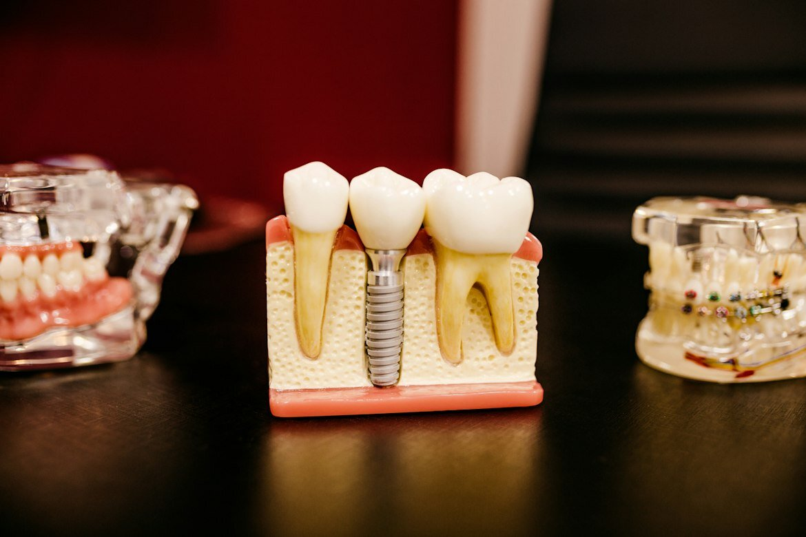
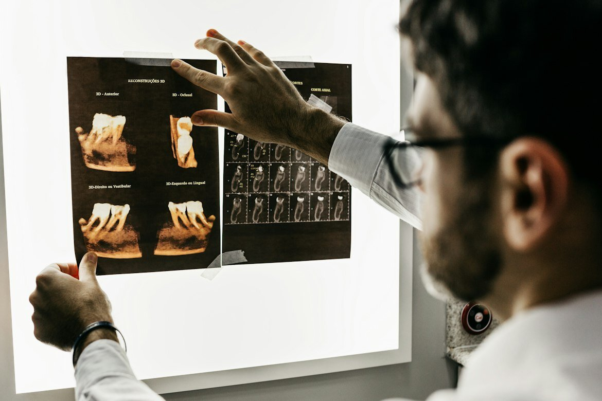

Centro odontológico en Belgrano
Recuperá tu sonrisa. Sin dolor y con especialistas.
Aplicamos protocolos de implantología de carga inmediata y diseño de sonrisa digital. Entrás al instituto y te retirás con dientes fijos y funcionales en la misma visita.
Agendar diagnósticoDirección médica: Dr. Hernán Rossi, M.N. 45892

Especialidades clínicas
Qué hacemos, cuánto lleva y qué anestesia necesita
Odontología multidisciplinaria enfocada en la estética, la función y la preservación de la estructura del diente. Los tiempos son los reales, no los del folleto.
| Tratamiento | Sesiones | Duración total | Anestesia |
|---|---|---|---|
| Implante de carga inmediataPernos de titanio Straumann o Neodent, con cirugía guiada por computadora. | 1 a 2 | 24 h | Local o sedación |
| Rehabilitación de maxilar completoArcada completa sobre implantes, con corona de zirconio de alta resistencia. | 2 a 3 | 4 a 6 semanas | Sedación consciente |
| Carillas de disilicatoDiseño de sonrisa digital. Ultrafinas, sin desgaste agresivo del diente natural. | 3 | 3 semanas | Normalmente no |
| Odontología sin miedoAnestesista en sala. Para cirugías múltiples o fobia severa al consultorio. | según el plan | según el plan | Sedación consciente |
Cómo trabajamos
De la primera consulta al alta
Nunca empezamos un tratamiento sin las cuatro primeras etapas cerradas y presupuestadas por escrito.
- Diagnóstico y tomografíaTomógrafo Cone Beam 3D en el instituto. No te derivamos a otro centro a hacerte placas.
- Plan y presupuesto cerradoTe entregamos el plan por escrito, con etapas, tiempos y costo total. Lo que firmás es lo que pagás.
- Cirugía guiadaLa férula quirúrgica se diseña sobre tu tomografía. Mínimamente invasiva y con postoperatorio corto.
- Prótesis y ajusteEscáner intraoral 3D: se terminaron las pastas de impresión. El laboratorio es propio.
- ControlesTres controles incluidos durante el primer año, con historia clínica digital a tu disposición.
Diagnóstico 3D in situ
El tomógrafo está acá adentro
Evaluamos tu volumen óseo en tiempo real, planificamos la cirugía con precisión milimétrica y eso es lo que hace que el postoperatorio sea corto y sin inflamación.
- Esterilización bajo norma internacional, autoclave Clase B.
- Escáner intraoral 3D en lugar de pastas de impresión.
- Historia clínica digital, tuya, descargable cuando la pidas.

Instalaciones
Dónde se hace cada cosa

Esterilización y quirófanos equipados 
Consultorios clínicos 
Procedimientos con cirugía guiada
Ubicación y logística
Av. Cabildo 2000, piso 3, Belgrano
En el núcleo comercial de Belgrano, esquina Juramento, con acceso directo por subte y Metrobus.
Dirección
Av. Cabildo 2000, piso 3
Esquina Juramento, CABA
Cómo llegar
Subte D, Juramento, a 50 m
Metrobus 152, 68, 59, 60, 113
Estacionamiento
Parking Ciudad, Vuelta de Obligado 2050
2 horas sin cargo en cirugías
Dudas frecuentes
Lo que más nos preguntan
¿Duele colocarse un implante dental?
No. El procedimiento se hace con anestesia local de alta eficacia o sedación consciente, con anestesista en sala. Con cirugía guiada 3D el postoperatorio es mínimo y se controla con la medicación indicada.
¿Trabajan con obras sociales o prepagas?
Trabajamos de manera particular, para garantizar materiales importados y tiempos de atención propios. Te entregamos la factura y la historia clínica detallada para que gestiones el reintegro si tu plan lo contempla.
¿Qué medios de pago ofrecen?
Efectivo, transferencia y tarjetas de crédito con planes de financiación para tratamientos integrales de implantología y ortodoncia invisible.